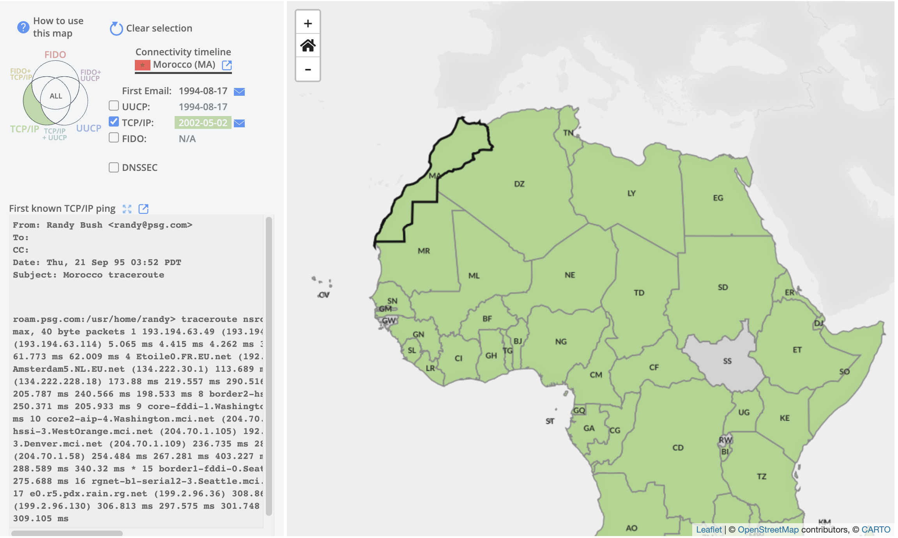
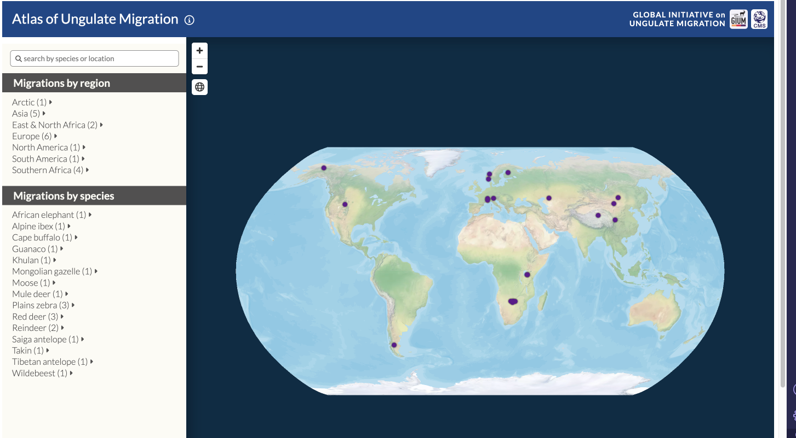

InfoGraphics Lab project on this interactive web map of the first email trasmission history as internet was installed throughout Africa. I worked on bringing the first email data for each country, and various interactive features such as the email icon button, and click/hover interaction on the map.

InfoGraphics Lab web mapping project of ungulate migrations across the world. I contribute UX/UI designs using Mapbox Studio and Mapbox GL JS to visualize the migration patterns of particular ungulates. My work particualrly is on the interactive feature of clicking a migration and displaying the associated layers with it that were created in Mapbox Studio. Additionally working on the different details of the mobile and desktop versions of the map, to create a intuitive experience in either environment. The legend is another area I've worked a lot on, standerdizing the icon and text spacing, and features such as the satellite/street view button.
